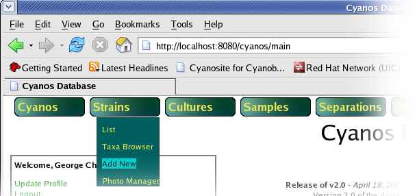
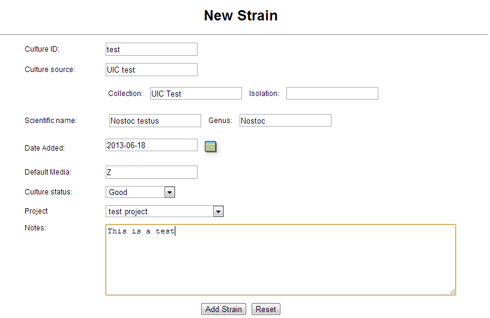
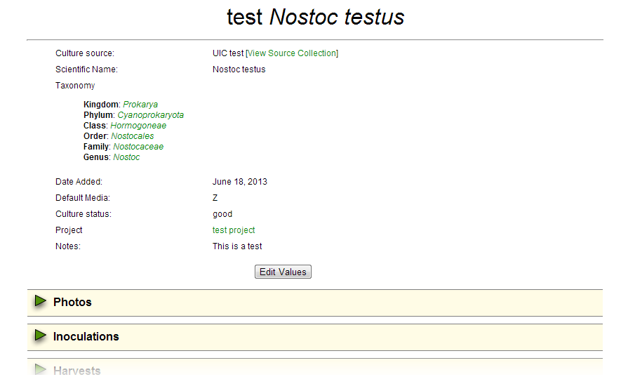
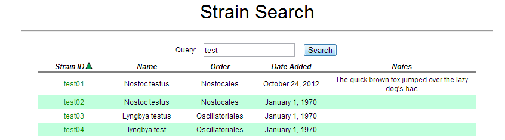
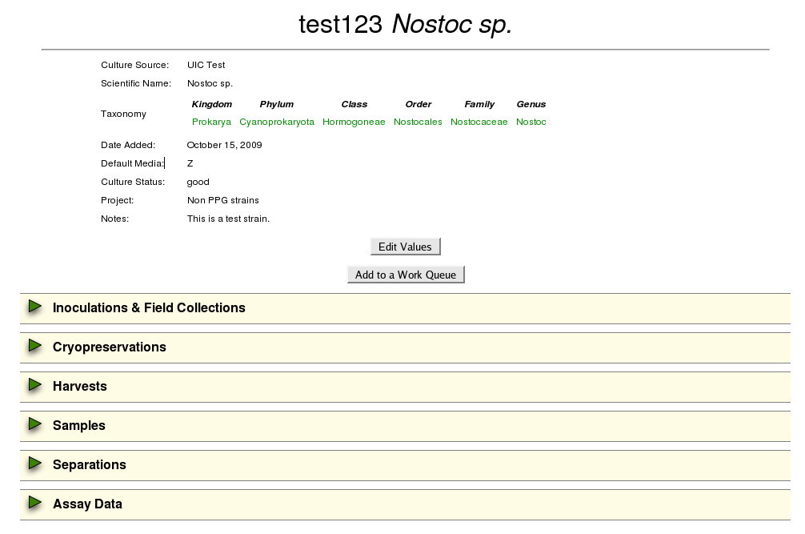
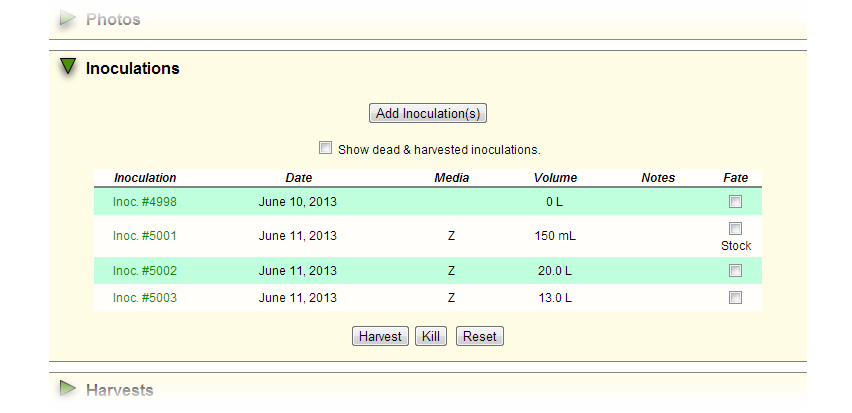
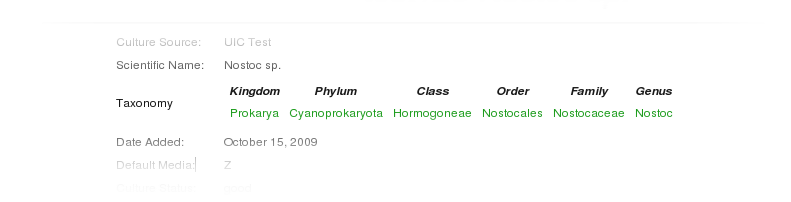
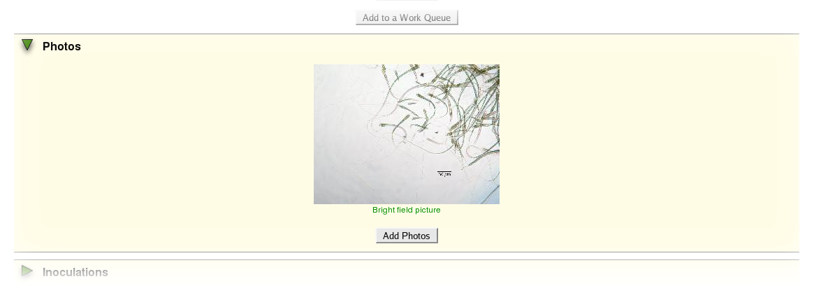
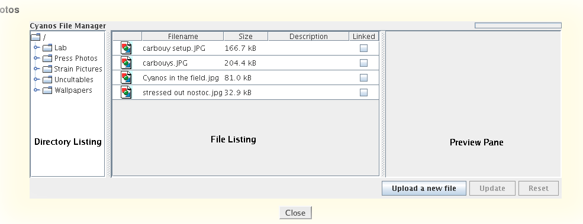

Basic strain and species information can be managed in the CYANOS database. Allowed attributes include strain ID, culture source, date added, date removed, removal reason, culture status, Latin binomial, default media, project code and notes.
Select Add New from the Strain menu.

Enter information into the Add Strain form.

Click the Add Strain Button.

The strain is now added to the database and can be viewed on the master strain list.
Return to table of contentsStrain information can be accessed from various strain links within the CYANOS website as well as the strain search form that is presented on the main page and accessible via the menu Strain > Search. An example of this list is seen in the following figure.
Clicking on a strain, whether from the search list or a strain link within CYANOS, will present the details of that strain. An example strain page is seen in the following figure.
The top part of the page displays the attributes of the strain. If the user has permission to modify the strain, the Edit Values button will be available and the user can click that button to display an editable form to change the strains attributes.
The lower part of the page has sections that list records associated to the strain. Each of these sections can be opened or closed by clicking on the green triangle to the left of the section title. For example, if a user clicked on Inoculations & Field Collections, the section would open to reveal a listing of inoculations or field collections associated with this strain.
Once the user is finished with a particular section it can be collapsed by clicking on the green triangle again.
Return to table of contentsTaxonomic information can be stored in the taxonomic table of the CYANOS database. This information can be tied to individual strains using the genus of a strain record. The CYANOS web interface will automatically retrieve and present this information, if available. A Taxa Browser is available via the Strain menu as well as the taxonomy links provided on the Strain Information page (see below). The Taxa Browser allows one to navigate strains based upon taxonomic data.

Information on the setup and management of the taxonomic table can be found in the Developers' Guide. Changes to this table should only be required when there is a revision in the taxonomic hierarchy while changes in strain identification only need to happen to the strain record and the resulting taxonomy will link based upon the genus.
Return to table of contentsIn addition to the basic attributes of a strain, the strain record can also link picture files stored on the server. The list of current pictures linked to a strain can be viewed in the Photos section in the strains information page.

New photos can be linked to the strain using the CYANOS File Manager applet. This applet it opened by clicking on theAdd Photos button.

On the left hand side of the CYANOS File Manager applet is a hierarchical list of the file folders available. Click on a folder to view the a list of files present in the selected folder and use the twisty to the left of the folder icon to view subfolders of a particular folder. In the file listing view, select a file to view a preview in the preview pane to the right of the file listing.
To link a photo, click the link checkbox for the photo and double click in the Description cell to add a description for the photo. Then click the Update button to commit the changes to the database. Photos can be unlinked by simply unchecking the appropriate "Linked" checkbox then clicking the Update button. When one is finished managing photos for a strain, click the Close button to close the CYANOS File Manager.
The CYANOS File Manager can also be used to upload new files to the server. Use the Upload a new file to open the upload dialog. While this method can be useful in adding a new file to the server, this method is not properly tuned for performance and it is recommended that basic file management, i.e. add and delete, should be performed using a standard file sharing service, e.g. Windows Networking (SMB/CIFS) or SFTP.
Return to table of contentsRequired permissions listed in this table denote the role and permission bit, in parenthesis. Actions in italics utilize global level permissions only.
| Action | Required Permission |
| Add a new strain | culture(Create) |
| Modify a strain | culture(Write) |
| Manage photos | culture(Write) |
| Delete a strain | culture(Delete) |